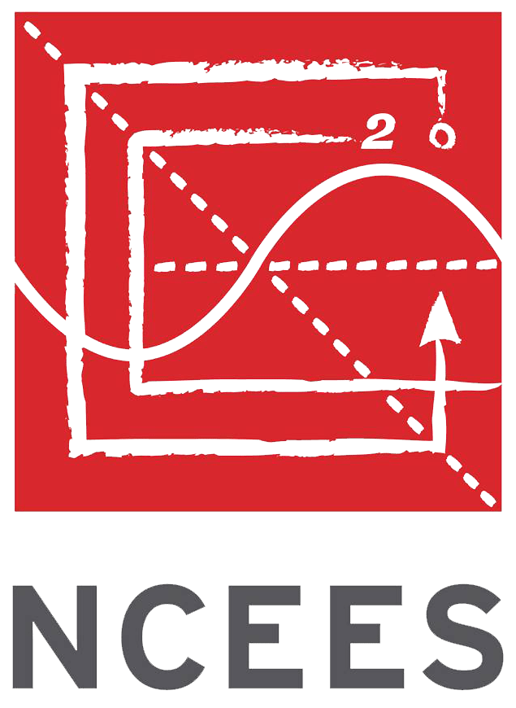

Certifications
Note: You can click each badge for its verification link
-
Skills measured: implementing, managing, and monitoring identity, governance, storage, compute, and virtual networks in a cloud environment, plus provision, size, monitor, and adjust resources, when needed.
Technologies used: Azure portal, Virtual Networks, Virtual Machines, Azure Active Directory, Key Vault, Azure Storage -
Skills measured: Transforming datasets, creating data models, visualing data, and share assets by using Power BI, using Power Query and writing expressions by using Data Analysis Expressions (DAX), assessing data quality, and understanding data security, including row-level security and data sensitivity.
Technologies used: Power BI, DAX, Power Query, Active Directory -
Skills measured: foundational knowledge of core data concepts including relational and non-relational data and they're implemention using Microsoft Azure data services, visulizations, and analytics workloads.
Technologies used: Azure portal, Azure SQL, Azure CosmoDB APIs, Cloud Data Services -
Skills measured: foundational level knowledge of cloud computing concepts, models, and services, such as public, private, and hybrid cloud, infrastructure as a service (IaaS), platform as a service (PaaS), and software as a service (SaaS), and how Azure supports security, privacy, compliance, and trust.
Technologies used: Azure portal, Azure Key Vault, Azure Storage, Azure Containers, Active Directory -

Fundamentals of Engineering: Civil / Engineering in Training (EIT)
Skills measured: knowledge of fundamntal civil engineering topics such as statics, dynamics, mechanics of materials, fluid mechanics, foundation engineering, hydraulics, project management, economics, and statistics.